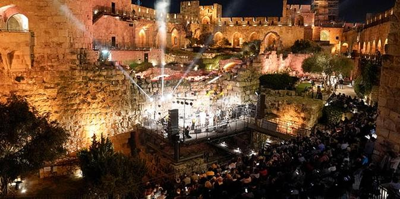
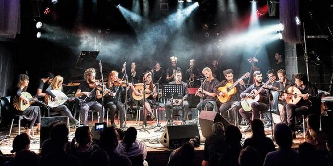
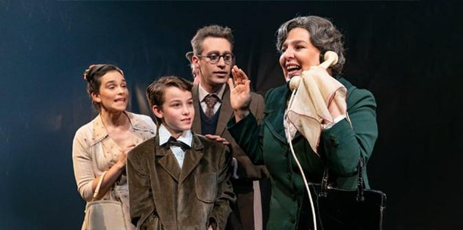
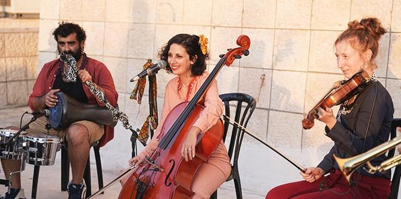

The closing event of SidraTarbut 2022 was a Tahrir-style Selichot event at the Tower of David, between Jerusalem’s Old City walls. The festive event was attended by Jerusalem mayor Moshe Lion. (Photo: Riki Rachman. Courtesy of The Jerusalem Foundation.)
In 2021, the Jerusalem Foundation, with the support of the Jack, Joseph and Morton Mandel Foundation, created SidraTarbut (CulturEvents) – a unique summer festival blending together film, dance, theater and music. Over the months of August and September, Jerusalem is treated to a rich series of events and artistic offerings that span the entire city and are offered free of charge or for a symbolic fee. Performances and events are selected and adapted to neighborhood residents, taking into consideration each community's special characteristics and population. Among the events are concerts, theatrical productions, film screenings, dance performances, storytelling, poetry readings, drum circles, circus performances and more.

The Madrasa Ensemble playing melodies from Morocco and Algeria, using a mixture of Western and Eastern instruments. Over 1,500 people enjoyed the music, with lyrics in Arabic and Hebrew, at the Ramot Alon Community Center. (Photo: Raz Sharabi. Courtesy of The Jerusalem Foundation.)
The initial impetus for the series was the economic and social crisis caused by the COVID-19 pandemic. In that difficult period, the Mandel Foundation sought to mitigate some of the negative effects of the pandemic by offering emergency grants to a variety of organizations. One such grant was awarded to the Jerusalem Foundation for SidraTarbut, an innovative initiative designed to strengthen the cultural life of Jerusalem's residents and to provide a valuable opportunity for Jerusalem artists and performers to demonstrate their talents on stage to a broad public audience. The events of the series span East and West Jerusalem, secular, ultra-Orthodox and national religious communities, and neighborhoods that are ranked low and high on the socioeconomic scale. The varied offerings appeal both to enthusiast culture lovers and the general public of all ages.
The play "A Tale of Love and Darkness," based on Amos Oz's book of the same name, at the Khan Theater. The audience included people of all ages from all over the city, including senior citizens and theater students. (Photo: Yael Ilan. Courtesy of The Jerusalem Foundation.)
Following the success of SidraTarbut in the summer of 2021, the Mandel Foundation decided to support the festival for another two years. In 2022, SidraTarbut events were held across 34 neighborhoods throughout the city, with a total of 64 performances that were enjoyed by a variety of audiences totaling over 15,000 people. Many of the participating artists and cultural leaders are graduates of the Mandel Program for Leadership in Jewish Culture, which aims to contribute to the vitality and diversity of Jewish culture in Israel by investing in leaders in education, culture, and community.

Performance by the septet musical ensemble Ecoute at the East Talpiot community center, to mark the start of the new school year. The ensemble also performed in French Hill and Homat Shmuel. (Photo: Riki Rachman. Courtesy of The Jerusalem Foundation.)
SidraTarbut will be opening in mid-August for the third year in a row. For 40 days and nights, residents of Jerusalem will be able to participate in an array of performances – music, dance, theater, film and more – free of charge or for a nominal fee. The performances will take place in well-known venues and unusual spaces that will be specially adapted to host the festival this year.
Highlights of the SidraTarbut festival of 2022
{kind=link}
{kind=link}
{kind=link}
{kind=link}